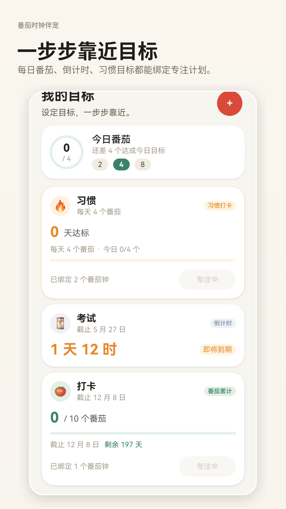
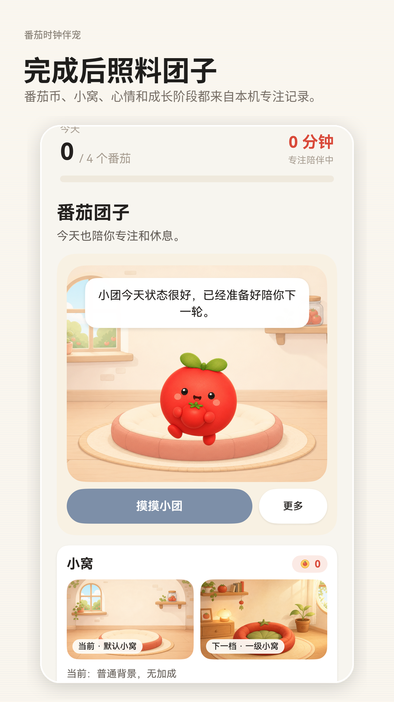
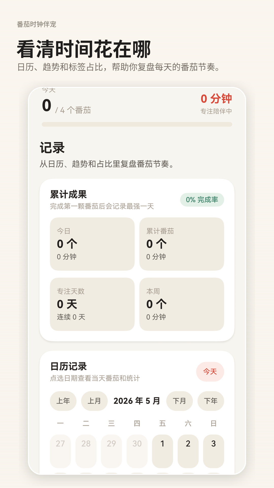
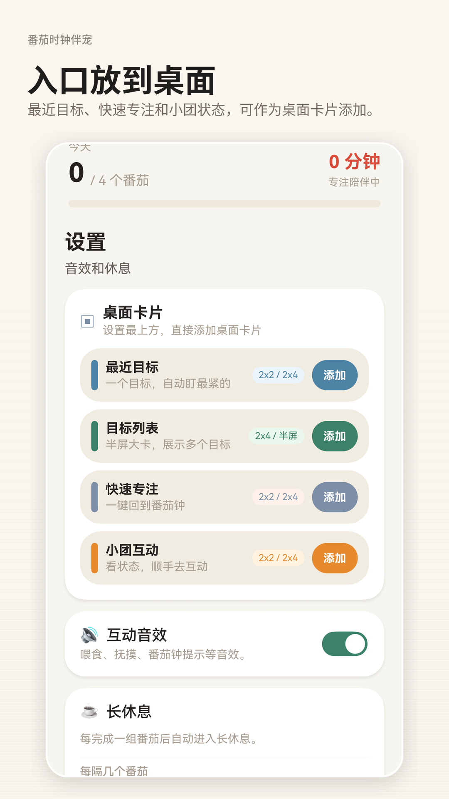

专注计时
支持预设和自定义番茄钟，专注、暂停、继续、取消和休息都能清晰处理。
这是一个偏工具属性的陪伴型番茄钟，重点放在专注、复盘和本地数据管理。
支持预设和自定义番茄钟，专注、暂停、继续、取消和休息都能清晰处理。
完成专注后获得番茄币和亲密度，喂食、整理小窝和互动会带来温和反馈。
每日番茄、倒计时目标和习惯目标都能绑定到专注计划里。
查看日历、趋势图、标签占比和专注历史，回看时间花在了哪里。
最近目标、快速专注和团子状态可以放到桌面，打开更快。
搭配系统提醒、后台运行和白噪音保活，保持离线计时的连续性。
以下截图直接来自应用界面，保留了当前版本的真实布局和风格。




当前版本不接入账号、广告、统计 SDK 或云同步，核心数据保存在本机。